Painting · Digital
Make Our Mark
Humans have told stories and made art since creation. How do we use history to inform our futures?
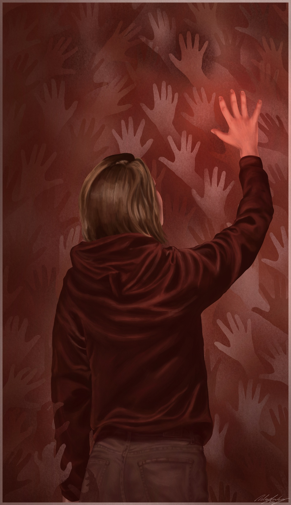
01
About the work
This piece explores the evolution of storytelling. By juxtaposing ancient and modern art, I honor early human expression and highlight how it continues to shape us. Hands—one of the first artistic symbols—reflect something deeply human that endures across time. Using a digital medium, I contrast contemporary technology with reverence for ancient tools, bridging past and present through shared acts of creation.
02
Sketchbook
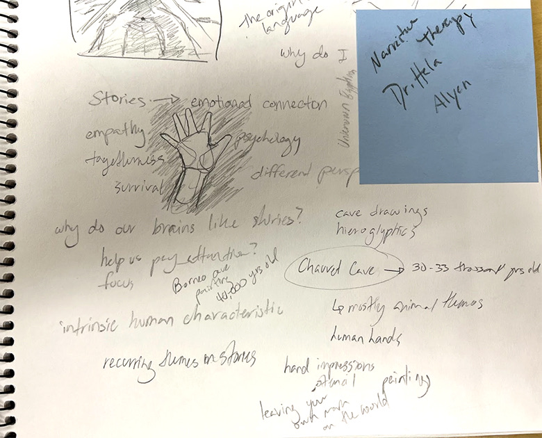
Notes 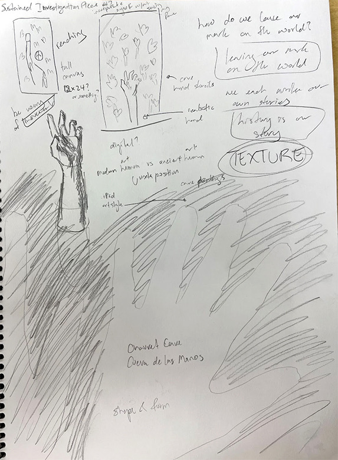
Hand and texture studies 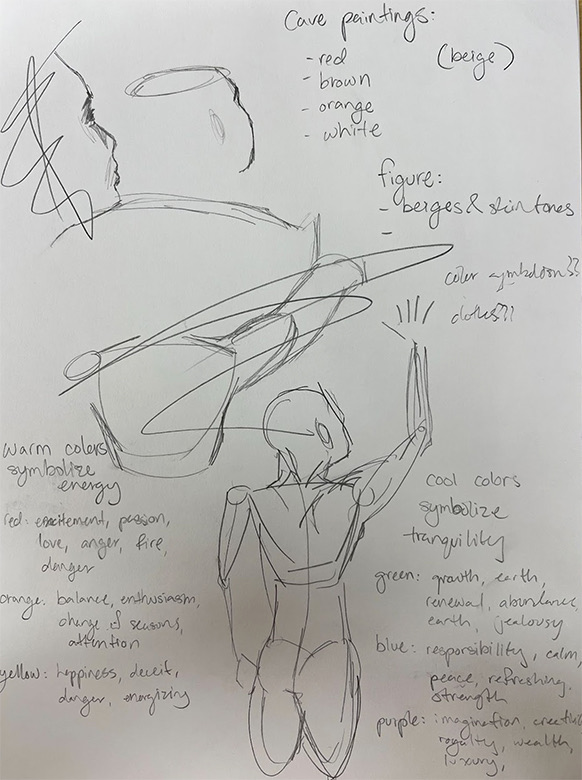
Figure studies
Research ancient art forms and symbolism; experiment with composition and color; hands aid movement.
03
In progress
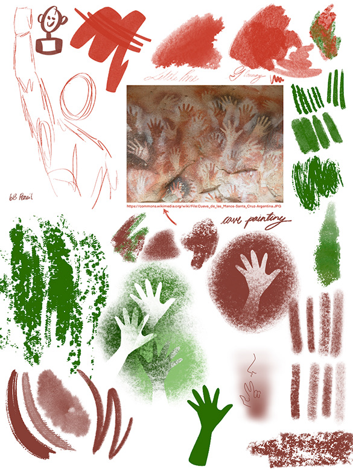
Swatches and reference 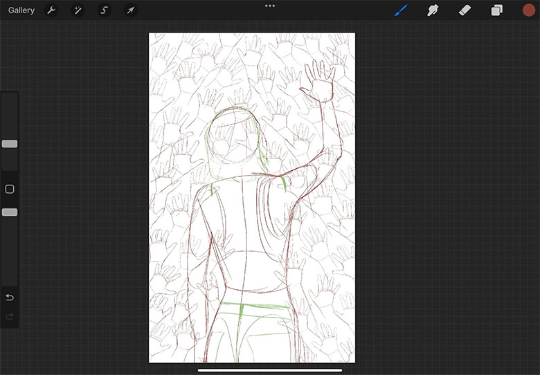
Line art 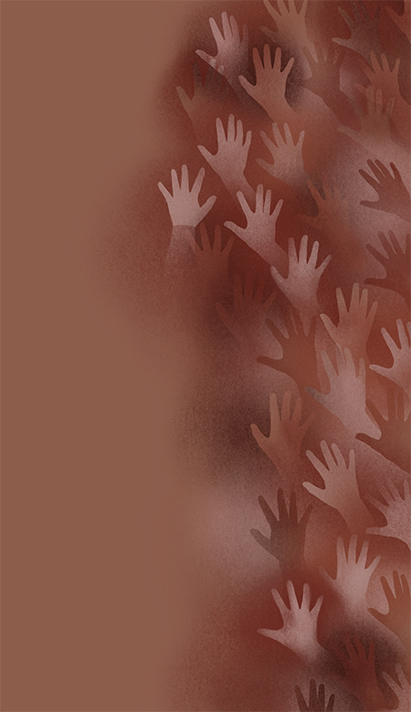
The wall 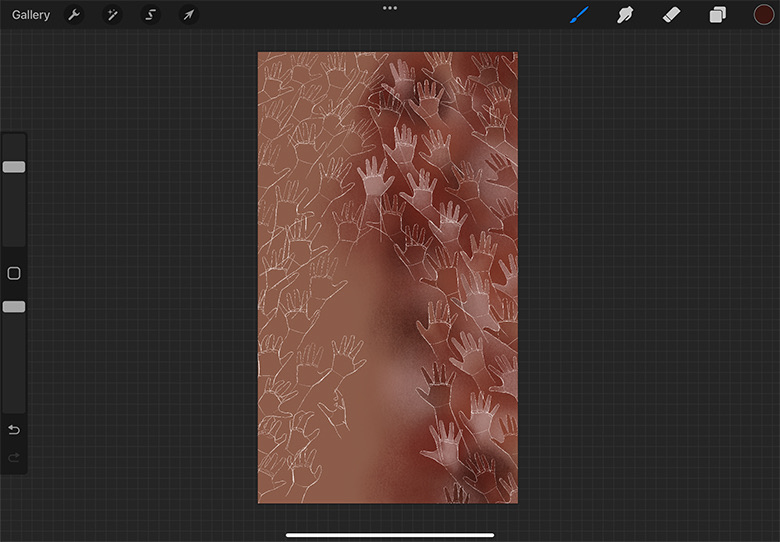
Layering handprints 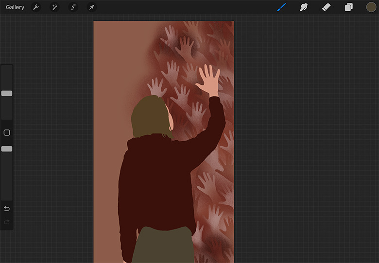
Figure blocked in 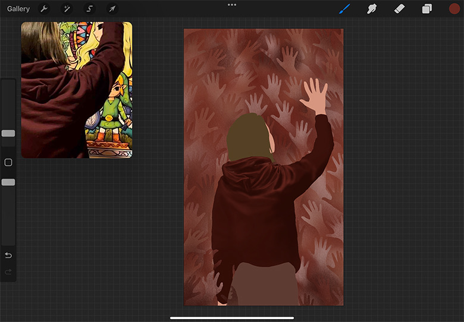
Reference
04
Detail
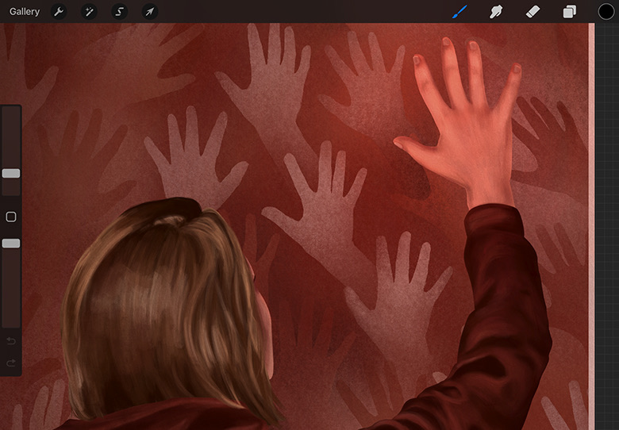
The hand